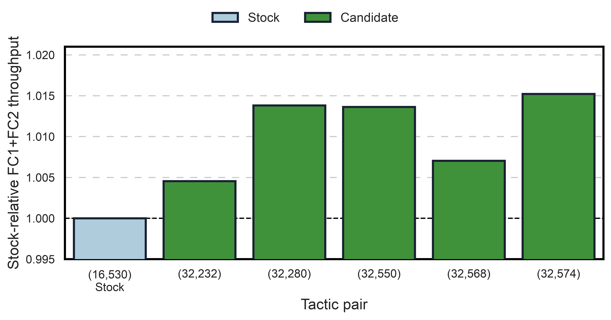
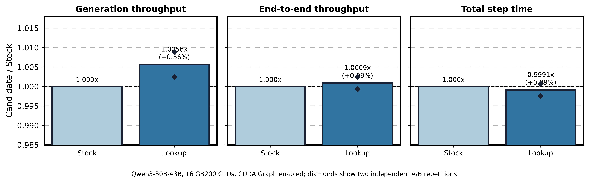

END-TO-END AUDIT COMPLETE: NO PROMOTION
The production-prepacked Qwen3-30B-A3B MXFP8 expert FC1/FC2 path was replayed with CUDA Graphs enabled. Eight representative routing profiles cover 95.31% of sampled MoE GPU time. The audit measured all 920 legal FC1/FC2 tactic pairs for every selected profile, producing 7,360 successful rows.
All rows were finite and deterministic, with max_abs_error=0 and cosine similarity between 0.99999988 and 1.00000012. These checks establish micro-kernel numerical agreement for the replayed tensors; they are not a GSM8K or end-to-end accuracy claim.
The final same-job comparison repeated stock (16,530) and the five strongest common candidates 50 times per profile. Candidate (32,574) was the best stable direction: aggregate trace-weighted FC1+FC2 time improved by 1.52%, the binding lower weighted-median gain was 1.22%, and no profile regressed. It did not pass promotion because the required weighted-median gain is 2% and its maximum CV was 3.74%, above the 3% limit.

| Tactic pair | Aggregate kernel throughput | Weighted-median gain | Maximum CV | Maximum profile regression | Decision |
|---|---|---|---|---|---|
(16,530) stock | 1.0000x | 0.00% | 4.70% | 0.00% | Baseline |
(32,232) | 1.0045x | 0.02% | 3.22% | 1.77% | Reject |
(32,280) | 1.0138x | 1.25% | 28.34% | 0.88% | Reject |
(32,550) | 1.0136x | 1.25% | 40.86% | 0.88% | Reject |
(32,568) | 1.0070x | 0.00% | 3.75% | 0.46% | Reject |
(32,574) | 1.0152x | 1.22% | 3.74% | 0.00% | Reject |
The ratio is weighted stock FC1+FC2 time divided by weighted candidate FC1+FC2 time. It is a kernel-level ratio, not NeMo-RL generation throughput.
The unqualified (32,574) direction was nevertheless evaluated in two matched NeMo-RL A/B repetitions to quantify its end-to-end opportunity. The candidate runtime bundle changed exactly one FlashInfer TRTLLM MoE cache leaf: the 128-token bucket used FC1 tactic 32 and FC2 tactic 574 instead of stock tactics 16 and 578. Every other cache entry and runtime input was identical.
Both arms used Qwen3-30B-A3B, 16 GB200 GPUs across four nodes, vLLM 0.25.1, FlashInfer 0.6.13, CUDA Graphs enabled, 64 prompts times 32 generations, and a maximum sequence length of 4,096. Steps 3--8 generated exactly 47,752,694 tokens per arm in each repetition.
| Repetition | Generation tok/s/GPU | E2E tok/s/GPU | Total step time |
|---|---|---|---|
r9 | 9,675.84 → 9,761.53 (+0.89%) | 2,444.87 → 2,443.09 (-0.07%) | 208.93 s → 209.08 s (+0.07%, worse) |
r11 | 9,810.32 → 9,834.67 (+0.25%) | 2,437.63 → 2,443.78 (+0.25%) | 209.55 s → 209.04 s (-0.24%, better) |
| Aggregate | 9,743.08 → 9,798.10 (+0.56%) | 2,441.25 → 2,443.43 (+0.09%) | 209.24 s → 209.06 s (-0.09%, better) |

The lookup increased generation-only throughput by 0.56%, but the whole RL step improved by only 0.09%. The generation gain is below the measured 0.98% maximum run-to-run variation. Therefore, this result does not establish a repeatable production benefit.
| Stage | Job | Result |
|---|---|---|
| Routing trace and prepacked capture | 2549878 | Artifacts captured; job later failed during teardown because the driver environment lacked megatron |
| Full 920-pair audit | 2550024 | All 7,360 JSONL rows completed; job canceled only after raw data completion while NSys finalization remained active |
| Top-five repeat run | 2550079 | All 40 JSONL rows completed; superseded by the stock-inclusive run |
| Stock plus top-five, 50 repeats | 2550086 | Completed successfully, 48/48 rows |
Runtime A/B repetition r9 | 2551257, 2551259 | All eight training steps completed; evidence recovered after the original postprocessor rejected nested token masks |
Runtime A/B repetition r11 | 2551503, 2551505 | Both stock and candidate jobs completed successfully |
Machine-readable summaries: micro audit and runtime A/B.